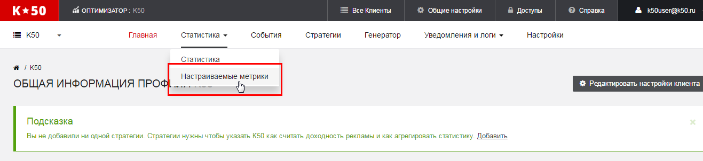
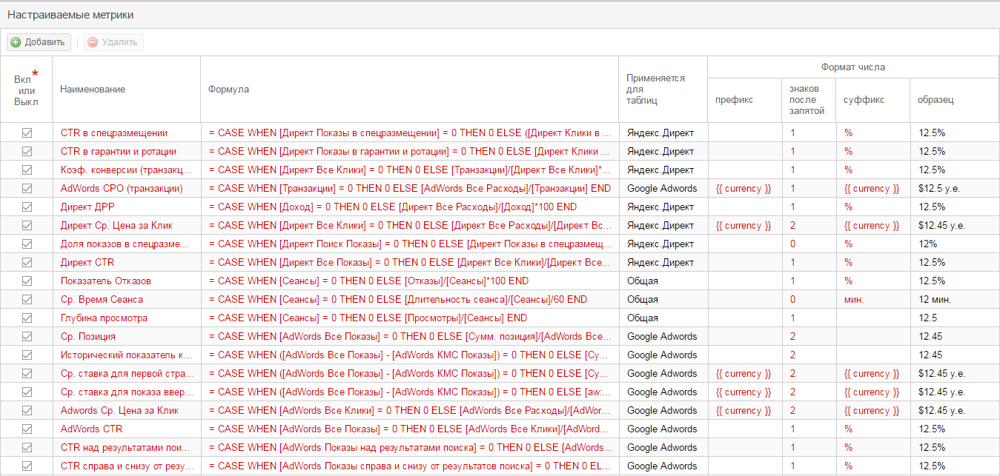

Создание собственных метрик
Вы можете создавать собственные метрики, опираясь на все доступные в сервисе. Для этого необходимо перейти в раздел Настраиваемые метрики

При переходе в данный раздел вам будет показан список настроенных метрик. Красным цветов отображаются метрики, созданные по умолчанию (пример - ср. цена клика). Такие метрики нельзя удалить, но можно выключить, если это необходимо. Черным цветом отображаются метрики, созданные пользователем. Такие метрики можно редактировать, удалять и выключать.

Создание метрики
Для создания метрики необходимо нажать на кнопку Добавить. Следует указать следующие параметры
| Параметр | Описание |
|---|---|
| Наименование | Название метрики, которое будет отображаться во всех отчетах |
| Формула | Формула для расчета метрики. Может использовать все доступные метрики и стандартные операции для расчета. |
| Применяется для таблиц | Показывает, в каких таблицах будет доступна эта метрика. Яндекс.Директ - метрика доступна в отчетах директа, Google AdWords - метрика доступна в отчетах AdWords, Общая - метрика доступна во всех отчетах. |
| Префикс | Текст, который будет указан перед вычисленной метрикой. Например, префикс $ будет отображаться с метрикой следующим образом $10. При использовании {{ currency }} будет динамически подставляться название выбранной валюты. |
| Знаков после запятой | Отображаемое количество знаков полсле запятой. |
| Суффикс | Текст, который будет указан после вычисленной метрики. Например, суффикс руб будет отображаться с метрикой следующим образом 10 руб. При использовании {{ currency }} будет динамически подставляться название выбранной валюты. |
Написание формул
Формулы задаются аналогично формулам в Excel. В квадратных скобках задаются метрики. Для формул доступны все стандартные операторы вычисления +,-,*,/. Группировка вычислений осуществляетя с помощью круглых скобок (,).
Пример формулы:
=[Расход]/([Транзакции]+[Звонки])
Условный оператор в формуле
Помимо стандартных операций вы можете использовать условия при составлении формул.
Например, вы можете проверять, является ли знаменатель формулы нулевым. Для этого используется следующая конструкция:
CASE WHEN [условие1] THEN [результат1] WHEN [условие2] THEN [результат2] ELSE [результат в остальных случаях] END
В качестве условий могут задаваться проверки значений доступных метрик.
Доступны следующие проверки условий:
| Условие | Описание |
|---|---|
[значение1]=[значение2] |
Значение 1 равно значению 2 |
[значение1]>[значение2] |
Значение 1 больше значения 2 |
[значение1]<[значение2] |
Значение 1 меньше значения 2 |
[значение1]>=[значение2] |
Значение 1 больше или равно значению 2 |
[значение1]<=[значение2] |
Значение 1 меньше или равно значению 2 |
[значение1]<>[значение2] |
Значение 1 не равно значению 2 |
Условия можно группировать между собой для формирования более сложных условий. Для этого используются операторы OR и AND:
| Условие | Описание |
|---|---|
[условие1]AND[условие2] |
Оба условия должны быть выполнены. Эквивалент И в Excel |
[условие1]OR[условие2] |
Хотя бы одно условие должны быть выполнено. Эквивалент ИЛИ в Excel |
Условия можно группировать с помощью скобок для большей гибкости настроек.
| Условие | Описание |
|---|---|
[условие1]AND([условие2]OR[условие3]) |
Условие 1 должно выполнится вместе с одим из условий (условие 2 или условие 3) |